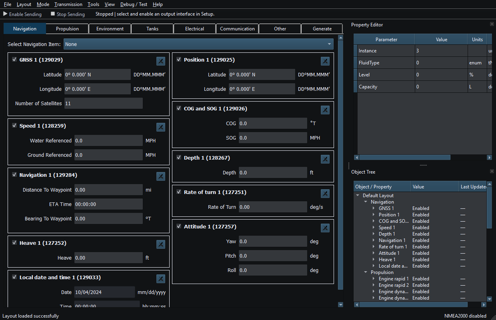

RayNmeaSimulator is an NMEA2000/NMEA0183 engineering simulator and receiver. Use it to inspect supported incoming messages, construct repeatable instrument data and exercise marine-electronics workflows on an appropriately configured test network. It is a bench reference, not a certified navigation system.
Open Help → RayNmeaSimulator Help or press F1. The left pane contains seven categories. Click a topic, or type a phrase in Search Help. Search includes article text and captions as well as titles; it is case-insensitive literal substring search, not an Internet query. Press Enter to open the selected matching topic, or the first result, without closing Help. Search remains focused for another query. Clear the field to restore Contents. Back and Forward retrace article navigation; Home returns here. Ctrl+F, or the platform Find shortcut, focuses Search Help. Escape closes Help.
F1 from the Property Editor, Object Tree or Setup opens a related topic. Help is modeless: reading it does not suspend the rest of the application. F12 still invokes emergency Stop. Closing Help preserves its window/splitter geometry; a later opening fits the available screen.
Message references: Supported NMEA2000 PGNs and Supported NMEA0183 Sentences list implemented RX/TX directions and significant limits.
Select an image to open its full-resolution view. Use Fit, 100%, Zoom In/Out and the scrollbars to inspect small controls. Escape closes the image window.
Use your own connection details, vessel settings and route coordinates when following an example. Read the caption for the controls and state shown.

Figure 1. Category tabs, Sending controls, Property Editor and Object Tree in the main window. Click to enlarge.
System Requirements · Installation and First Launch · Viewer vs Generate · Quick Start · Loading the Default Layout · Connection Troubleshooting · Enable, Dispatch and Sending · Route Overview · Engineering Units